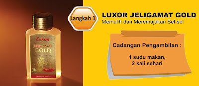

-
Home(current)
-
Jelly Gamat Gold
-
Cell Recipe Plus
-
Sprulina
-
Biocomplete Krill Omega Plus
-
Ex-Tar C Plus
-
Bio Bran MGN-3
-
Fiscino
-


S A M P L E
See Details100% Menggunakan species gamat emas (Stichopus hermanii)sahaja, dihasilkan di Kilang bertaraf GMP dan bertekhnologi canggih, Diiktiraf tahap "GOLD STANDARD" oleh Bapa Gamat Malaysia.
Memulih & meremajakan sel-sel
Membantu masalah kulit
Mempercepatkan proses penyembuhan luka
Mengurangkan keradangan
Mengurangi kesakitan
Membantu mengurangkan paras gula dalam darah
Membantu menrunkan paras Kolesterol
Merangsang Metabolisme badan
Mengimbang tekanan darah Menguatkan sendi dan tulang
Siapa Yang memerlukan
Masalah dalam perut penyakit darah tinggi dan Kolesterol tinggi Masalah kulit Penyakit kencing manis Sakit sendi Selepas bersalin
Cell Recipe Plus


Krill Omega Plus

See Details Kuasa pemulihan dari lautan TERKINI, Luxor Krill Omega Plus. Krill atau nama saintifiknya Euphausia superb. Krill bermaksud ‘Makanan Ikan Paus’ dalam bahasa Norway. Para Saintis mengkaji, orang Eskimo yang tinggal di kutub Utara & Kutub selatan tidak mempunyai masalah jantung walaupun mereka memakan lemak ikan paus untuk memanaskan badan mereka. Kajian mendapati lemak ikan paus yang mengandungi kolesterol tinggi telah ditukar kepada kolesterol yang baik. Menurut mereka, kejadian ini disebabkan kesan pemakanan utama ikan paus iaitu Krill.
BKOP01 Biocomplete Krill Omega Plus (30tab - 1 bx =RM115.00)
silahkan hub:
See Detail
Apa itu Spirulina?
Spirulina merupakan alga lautan berbentuk skru atau lingkaran (spiral). Maka ia dikenali sebagai spirulina. Spirulina kaya dengan khasiat yang terkandung dalam 5 jenis makanan utama kita, iaitu nasi, sayur-sayuran, buah-buahan daging dan ikan. Maka, tidak hairanlah ia memenangi gelaran seperti "Makanan Ideal Zaman Baru" dan "Makanan Angkasawan". Spirulina mempunyai merupakan 4 pigmen semulajadi yang terbukti bersifat anti-oksidan dan anti-barah. Selain daripada membekalkan khasiat makanan yang mencukupi, spirulina membekalkan zat makanan yang bersifat 100% alkali yang dapat meneutralkan keasidan dalam badan. Di Jepun, lebih daripada dua puluh ribu doktor mengesyorkan pesakit mereka mengambil spirulina bagi nutrien tambahan. Di Rusia, kajian menunjukkan spirulina mempunyai sifat anti-radioaktif. Di Mexico pula, spirulina ditambah ke dalam susu tepung sebagai makanan bayi. Pakar pemakanan mendapati 1g spirulina mempunyai kandungan zat makanan yang sama dalam 1kg sayur-sayuran dan buah-buahan. Dengan kata lain, spirulina memberikan lebih 1000 kali khasiat sayur-sayuran dan buah-buahan. Pendek kata, kandungan khasiatnya amat tinggi.
Mengapa Spirulina Penting Untuk Kita? Kini, membela seekor ayam untuk disediakan sebagai makanan hanya memerlukan masa 40 hari sahaja berbanding dengan zaman dahulu yang memerlukan masa selama 6 bulan. Semua ini dilakukan dengan menambah steroid kepada makanan untuk ternakan atau menyuntik hormon kepada ayam ternakan untuk mempercepatkan tumbesaran mereka. Bayangkan apa yang akan berlaku apabila kita memakan ternakan ini? Selain itu, sayur-sayuran yang disembur dengan racun perosak akan merosakkan zat makanan dalam buah-buahan dan sayur-sayuran. Ia turut mengancam sistem penghadaman kita apabila kita memakan makanan ini. Tidak ketinggalan, ramai antara kita yang mengamalkan tabiat memilih makanan yang tidak sihat seperti lebih gemarkan makanan bersifat asid seperti udang, daging dan kurang memakan sayur. Selain itu, amalan hidup yang tidak sihat seperti meminum arak, tidor lewat boleh memberi kesan negatif terhadap lebih 850,000 proses metabolisma dan penyingkiran toksin dalam badan. Amalan pemakanan yang tidak sihat merupakan punca yang membawa kepada ketidakseimbangan nutrien sehingga penyakit yang padah. Pilihan TERBAIK buat anda adalah Luxor Spirulina Pacifica Apakah Kelebihan Luxor Spirulina Pacifica? Gred 3A (AAA), 100% alkali Mengandungi 5 zat utama Juga mengandungi 4 pigmen semulajadi Dan Tambahan zat seperti zat Besi, Kalsium, Selenium, Vitamin B1, B2, B3, B12, GLA, Vitamin E & Vitamin K2. (klik sini) Wanita Hamil Khasiat seimbang membantu tumbesaran bayi Kalsium dan magnesium membantu menguatkan tulang dan gigi Mengelakkan masalah anemia Mengimbangkan hormon dan kestabilan emosi Mengurangkan risiko keguguran dan menguatkan rahim Mengelakkan kelahiran bayi cacat Kanak-kanak Membantu tumbesaran dan peningkatan otak Membantu menguatkan gigi dan tulang Mengelakkan masalah anemia Meningkatkan pertahanan badan & menghapuskan radikal bebas Jerawat dan Kecantikan Membersih toksik dalam badan Mengimbangi hormon dan membantu pemulihan luka Merangsang metabolisme dan mengelakkan parut jerawat Membantu mencantikkan kulit dan pigmentasi serta melambatkan proses penuaan dengan membuat masker menggunakan Jeli Gamat GOLD & Spirulina Pacifica & mengurangkan senggugut
BSP201 Spirulina Pacipica 200 (200tabs - 1 btl =RM85)
BSP401 Spirulina Pacipica 400 (400tabs - 1 btl =RM134)
BSP121 Spirulina Pacipica 1200 (1200tabs- 1 btl =RM332)
(+60) 1136383887 See Detail
Kenapa Kita Harus Mengambil Lebih Vitamin-C?
Pencemaran udara, kepanasan cuaca, tekanan kerja menyebabkan ramai yang menyalahgunakan ubat, merokok, meminum arak atau mengambil trankuilizer untuk meredakan keresahan. Tabiat ini menyebabkan kita kehilangan vitamin C. Justeru itu, bagaimanakah kita mendapatkan bekalan vitamin C yang mencukupi? Jikalau tidak, kita akan menghadapi pelbagai masalah kesihatan. Pada peringkat awal, kita akan menghidap selesema, gusi berdarah apabila kita memberus gigi, mudah berasa letih, tekanan darah menurun, saluran darah halus mudah pecah seperti vena varikos (salah satu tanda ialah kesan lebam pada badan selepas bangun.) Kita juga mudah hilang selera makan, sakit kepala, kulit kepala tidak bermaya dan mudah berkedut. Kita sering mengabaikan kesan-kesan ini. Namun, masalah ini akan menjadi semakin serius dan membawa penyakit seperti anemia, artritis, dan sebagainya. Kandungan darah yang berasid, merupakan tanda-tanda awal tekanan darah tinggi. Kekurangan Vitamin C mengakibatkan kehilangan zat besi dan badan sukar menyerap zat Kalsium. Ini seterusnya menyebabkan osteoporosis dan masalah luka sukar sembuh. Bagi mereka yang merokok, keperluan vitamin C adalah lebih tinggi kerana sebatang rokok akan merosakkan 25mg vitamin C dalam badan, iaitu bersamaan dengan jumlah vitamin C dalam 3 biji oren segar. Mereka yang mendapatkan rawatan perubatan jangka panjang juga harus lebih mengambil vitamin C ini. Pendek kata, Extar C Plus merupakan pilihan vitamin C yang paling sesuai untuk kita semua.
Apakah Extar C Plus?
Extar C Plus ialah Vitamin C generasi baru hasil kajian di Amerika.
Vitamin C tidak boleh dihasilkan oleh badan manusia. Jadi, ia hanya boleh didapati melalui pemakanan.
Vitamin C adalah vitamin larut air. Justeru itu, badan kita mudah kehilangan vitamin C melalui perpeluhan apabila terdedah kepada matahari yang terik, merokok, meminum arak, kesan ubat lain atau tekanan kehidupan.
Vitamin C membantu badan menyerap vitamin dan mineral lain dan menyingkirkan toksin.
Extar C Plus ialah produk paten Amerika Syarikat, Polyascorbate + Bioflavonoid.
Berupaya meneutralkan keasidan atau kealkalian dalam tubuh kita.
Mempunyai lebih 4 kali khasiat dengan kandungan asid oksalik dikurangkan sebanyak 80%. Jadi, ia tidak akan menyebabkan pembentukan batu karang ginjal. Meningkatkan daya ketahanan badan.
Setiap biji Luxor Extar C menawarkan 500 mg Vitamin C, 50 mg Kalsium dan 80 mg Bioflavonoid Sitrus.
Fungsi 3 komponen di atas adalah :
1. Vitamin C :
- Penting untuk pertumbuhan dan pemulihan sel-sel badan.
- Membantu dalam penghasilan kolagen yang merupakan elemen asas bagi kulit, otot rawan dan saluran darah.
- Membantu pemulihan luka.
- Mengekalkan Kesihatan Tulang Dan Gigi.
- Bertindak sebagai antioksidan yang menghalang pemusnahan sel oleh radikal bebas.
- Membantu menguatkan sistem keimunan.
2. Kalsium :
- Penting untuk pembentukan tulang dan gigi yang kuat.
- Menyokong fungsi jantung, saraf, otot dan sistem badan lain yang sihat.
- Membantu mencegah osteoporosis
3. Bioflavonoid Sitrus :
- Bertindak sebagai antioksidan.
- Membantu meningkatkan sistem peredaran darah.
- Anti-Alergi dan Anti-Radang.
4 Kelebihan Extar C Plus :
1. Lebih Cepat Kadar Penyerapan
(4 kali lebih biodapatan daripada vitamin C biasa)2. Disimpan lebih lama dalam tubuh
(4 kali lebih lama dalam sistem pengaliran darah)3. Penyingkiran yang minima
(Kurang vitamin C disingkirkan melalui air kencing)4. Larut air dan juga lemak (Tidak berasid and tiada kesan sampingan)
Rujukan : http://www.ez-trim.com/html/Ester%20C.htm
Kajian :HARGA (Termasuk Postage)
RM 70 sm | RM 74 ss (40 biji)
: (+60) 1136383887 segera
Produk-produk lain yang anda mungkin berminat :
Dalaman :
Jeli Gamat GOLD
Spirulina Pacifica
Krill Omega Plus
Luaran :
Syampu Gamat GOLD 2-in-1
Tonik Gamat GOLD Gel Gamat GOLD Pembersih Muka Gamat Serigama Minyak Urut Gamat Aromaterapi Serigama Krim Gamat Serigama Losyen Tangan & Badan Gamat Serigama Pembersih Wanita Gamat Serigama Ubat Gigi Gamat Serigama
Anda mungkin juga meminati: Awasi Demam Anak Anda Teh Chamomile Kilatkan RambutKHASIAT & KEGUNAANNYA
Sabtu, 01 November 2014
Komentar dokter mengenai Gamatteripang hewan laut.
Gamat Gold termasuk hewan laut. Dia biasa di sebut juga teripang emas .
Dengan teknologi yang semakin canggih, kini gamat gold atau tripang emas sudah bisa kita konsumsi dalam bentuk jelly gamat atau jeli gamat dengan berbagai merk yang beredar dipasaran. Diantaranya yang sangat populer saat ini adalah Jelly Gamat Gold - G
Inilah komentar beberapa dokter yang dihubungi Trubus secara terpisah. sumber dari majalah trubus online dr Andreas Widjaja SpPD Karangwulansari, Semarang Jawa Tengah Atas anjuran teman, dr Andreas Widjaja SpPD memberikan olahan hoisom-alias teripang-untuk mengatasi batuk menahun yang dialami anak sulungnya, Esra Wijaya (6 tahun). Sejak berusia 4 tahun ia mengidap batuk kronis. Hampir setiap bulan ia batuk dan pilek selama 7 hari akibat tonsilitas meradang. Biasanya saya memberikan obat berupa antiinfl amasi dan antialergi. Karena khawatir olahan hoisom tinggi MSG (monosodium glutamat), saya mencoba memberikan ekstrak teripang, ujarnya. Dosis 5 cc 3 kali sehari. Menurut pengamatan dokter spesialis penyakit dalam alumnus Universitas Diponegoro itu, sejak rutin minum ekstrak teripang praktis Esra tak pernah batuk. Mungkin pada teripang terdapat zat imunomodulator dan antioksidan. Imunomodulator berfaedah untuk membangun sistem kekebalan tubuh. Karena sistem imun meningkat sehingga tubuh dapat mengatasi zat asing yang mengganggu kesehatan. Antioksidan amat penting untuk mengikat radikal bebas. Maklum, kita hidup di antara polutan tinggi. Penggunaan bahan alami untuk obat memang tengah tren saat ini seiring dengan pergeseran dunia medis ke arah fitofarmaka. Sekarang amat banyak obat-obatan dari ekstrak tumbuhan. Saya yakin fitofarmaka ada khasiatnya. Namun, bedanya dengan obat medis, belum ada evident base, baru terbatas pada pengamatan, katanya. dr Hariadi,Semarang - Jawa Tengah Dokter Hariadi mengkonsumsi ekstrak teripang untuk mengatasi gastritis alias infeksi saluran pencernaan. Pada saat bersamaan ia juga memberikan kepada penderita gastritis. Dosisnya 2 sendok makan 3 kali sehari. Dua bulan berselang tampak kemajuan seperti mual dan kembung hilang. Menurut alumnus Fakultas Kedokteran Universitas Diponegoro itu teripang mengandung kolagen yang mempercepat penyembuhan. Pria kelahiran Semarang 28 Februari 1963 itu juga meresepkan ekstrak teripang untuk pasien nyeri sendi dan beragam luka. Proses penyembuhan relatif cepat lantaran teripang mampu meregenerasi sel dalam waktu singkat. Sampai saat ini belum diketahui adanya efek samping. Karena teripang merupakan suplemen organik sehingga penyerapan dalam tubuh berlangsung baik, ujarnya. (Sardi DuryatmoPeliput Lani Marliani, Hermansyah, & Imam Wiguna). dr Oetjoeng Handajanto, Sukajadi, Bandung - Jawa Barat Perkenalan dr Oetjoeng Handajanto dengan ekstrak teripang pada 2004. Semula ia menganggap ekstrak teripang hanya suplemen. Ahli terapi kolon itu memberikan ekstrak itu kepada penderita gangren atau luka akibat DIABETES MELLITUS. Dalam hitungan hari, luka pun mengering. Menurut lulusan Fakultas Kedokteran Bochum University, Jerman, itu keampuhan ekstrak teripang kaya kolagen. Faedah kolagen meningkatkan regenerasi sel-sel mati akibat luka sehingga mempercepat penyembuhan. Ia tak menyangka ekstrak itu mampu menyembuhkan luka dalam waktu singkat. Bagaimana dengan DIABETES MELLITUS Penyakit kencing manis itu pada dasarnya tidak bisa disembuhkan, tetapi kadar gula darah hanya bisa dikontrol. Itu pun hanya pada penderita diabetes tanpa ketergantungan insulin. Nutrisi pada teripang mampu merangsang kelenjar pankreas memproduksi insulin. Selain itu anggota famili Holothuriidae itu memperbaiki kinerja ginjal dan limfa sehingga gula dapat dicerna dengan baik. Senyawa aktif itu juga berguna untuk mengatasi luka dinding lambung penderita maag akut dan gangguan pencernaan
Jelly Gamat Gold

| Data Contact | : | Hadijah alia |
|---|---|---|
| Phone | : | (+60) 1136383887 |
| : | hadijahalia@gmail.com | |
| Linkendin | : | https://www.facebook.com/in/Icha Aditya/ |
NAMA-NAMA PRODUCT
APA ITU GAMAT?
TIMUN LAUT adalah haiwan invertebrata (tanpa tulang) marin mendiami kawasan bentik dan laut dalam. Timun laut meliputi 90% biojisim dasar laut, justeru itu merupakan komponen penting dalam ekosistem marin. Jumlah spesies timun laut dianggarkan melebihi 1500 dengan spesies baru dibincangkan setiap tahun sekali gus membuktikan bahawa kemampuan manusia termasuk dalam menerokai rahsia alam sebenarnya adalah amat terbatas seperti firman Allah : "Katakanlah (wahai Muhammad) : “Kalaulah semua jenis lautan menjadi tinta untuk menulis kalimah-kalimah Tuhanku, sudah tentu akan habis kering lautan itu sebelum habis kalimah-kalimah Tuhanku, walaupun Kami tambahi lagi dengan lautan yang sebanding dengannya, sebagai bantuan” - (Surah Al-Kahfi : 109) Menurut Prof Ridzwan Hashim, berbagai panggilan tempatan terhadap timun laut Malaysia telah diberikan mengikut suku kaum etnik tempatan samada sebagai bat, balat (Sabah), trepang (Indonesia), brunok, hoi-sum (Orang Cina) atau gamat (orang Melayu). Orang Portugis pula menyebut timun laut sebagai beche-de-mer. Rupa bentuk, saiz dan warna timun laut adalah berbagai dan bergantung kepada spesies. Bagi penduduk pesisiran pantai Semenanjung Malaysia, spesies timun laut Stichopus horrens (2012) daripada Genus Stichopus yang lebih dikenali sebagai ‘gamat emas’ kerana warna badannya yang kekadang kelihatan dalam air seperti tongkol emas. Spesies gamat ini merupakan spesies paling terkenal di kalangan para pengamal perubatan tradisional sebagai antara sumber ubat-ubatan dalam rawatan tradisional. Gamat spesies ini hanyalah dimakan semata-mata untuk merawat sesuatu penyakit dalaman. Namun, perlu difahami di sini, Gamat adalah timun laut dan bukan semua timun laut itu adalah gamat! Sebenarnya cerita tentang gamat ada diceritakan dalam Al Quran :

Gamat mendapatkan makanannya daripada pati tanah iaitu nutrien yang terdapat dalam pasir di dasar lautan dengan menyedut pasir ke dalam mulutnya. Melalui proses osmosis, segala nutrien yang terdapat dalam tanah tadi diserap ke dalam badan gamat. Kemudian, hampas tanah tadi dikeluarkan semula daripada badan gamat menjadi "baja" kepada hidupan lain di atas tanah di dasar lautan. Sebab itu, jika anda dapatkan gamat yang original, apabila anda belah badannya, anda akan dapati terdapat butiran pasir laut di dalam badannya. Sebab itu, gamat sangat kaya dengan pati tanah. Ia satu-satunya makanan laut yang zero kolesterol. Hari ini kita lihat kenapa manusia kerap sakit dan banyak penyakit wujud disebabkan kita kurang makan makanan daripada pati tanah. Ini diceritakan dalam Al-Quran tentang asal kejadian manusia iaitu berasal dari saripati tanah.
Gamat mendapatkan makanannya daripada pati tanah iaitu nutrien yang terdapat dalam pasir di dasar lautan dengan menyedut pasir ke dalam mulutnya. Melalui proses osmosis, segala nutrien yang terdapat dalam tanah tadi diserap ke dalam badan gamat. Kemudian, hampas tanah tadi dikeluarkan semula daripada badan gamat menjadi "baja" kepada hidupan lain di atas tanah di dasar lautan. Sebab itu, jika anda dapatkan gamat yang original, apabila anda belah badannya, anda akan dapati terdapat butiran pasir laut di dalam badannya. Sebab itu, gamat sangat kaya dengan pati tanah. Ia satu-satunya makanan laut yang zero kolesterol. Hari ini kita lihat kenapa manusia kerap sakit dan banyak penyakit wujud disebabkan kita kurang makan makanan daripada pati tanah. Ini diceritakan dalam Al-Quran tentang asal kejadian manusia iaitu berasal dari saripati tanah.

Jadi, kurangnya pengambilan makanan berasaskan pati tanah menyebabkan sel badan tidak dapat menjalankan fungsinya dengan baik. Contoh makanan berasaskan pati tanah seperti sayur-sayuran dan buah-buahan. Ayam dulu seperti ayam kampung makan makanan daripada pati tanah tetapi ayam moden masa kini mengambil masa 40 hari untuk membesar. Sebab itu, ramai yang sakit hari ini. Justeru, untuk mendapatkan kesihatan yang terbaik, kita harus kembali semula kepada asal usul kita kerana di situ punca bermula segala-galanya. DAN berita baiknya, gamat kaya dengan pati tanah. Gamat - Warisan Malaysia
Sejak beberapa ratus tahun dahulu, masyarakat Melayu telah menggunakan gamat sebagai ubat serbaguna dan makanan kesihatan untuk mencegah penyakit, kekal sihat dan cergas. Menurut Lagenda Langkawi, Puteri Mahsuri menggunakan gamat untuk kesihatan dalaman dan juga luaran. Buku Perubatan Cina yang terkenal juga mencatatkan kehebatan dan keberkesanan gamat yang diumpamakan sebagai “Ginseng” dari laut. Jumlah spesies (jenis) timun laut dianggarkan 1100 spesies di seluruh dunia. Di Perairan Malaysia pula terdapat lebih daripada 43 jenis timun laut di pantai-pantai seperti Langkawi, Pangkor, Terengganu, Sabah dan Sarawak. Tetapi yang selamat tanpa kesan sampingan untuk dimakan dan digunakan sebagai sumber perubatan tradisional hanya 4 jenis spesies gamat sahaja. Warna timun laut adalah berbagai-bagai, biasanya bercampur-campur; kelabu, hitam, perang, putih tompok hotam dan sebagainya. Malah, spesies yang paling tinggi nilai perubatan, berkhasiat dan berkualiti tinggi ialah gamat yang berwarna kuning keemasaan iaitu gamat emas (nama saintifiknya ialah Stichopus horrens (2012) dahulunya dikenali dengan Stichopus hermanii).
Kajian & Penyelidikan Saintifik Terhadap Gamat
Pelbagai kajian telah dikendalikan di Amerika Syarikat, Australia, Jepun dan Korea untuk mengenalpastikan nilai perubatan dan keajaiban gamat. Ia membantu orang mengatasi masalah tekanan darah, asma, reumatisme, luka-luka, kencing manis dan lain-lain lagi. Gamat “Senjata baru Malaria”, kajian yang dibuat oleh penyelidik London seperti dilaporkan di akhbar The Star, 24 Disember 2007, Isnin. aintis tempatan juga menjalani pelbagai kajian mengenai gamat yang misteri ini seperti 2 institusi yang berikut : 1. Universiti Kebangsaan Malaysia (UKM)Keberkesanan gamat (Stichopus horrens) terhadap masalah penyakit / keadaan berikut : - Mengecutkan rahim. (Bagus kepada wanita selepas bersalin) - Kardiovaskular (saluran darah) - Menormalisasikan tekanan darah kepada tahap yang normal - Penyembuhan luka - Anti-bakteria (kebersihan diri terutama wanita yang mengalami masalah keputihan) 2. Universiti Islam Antarabangsa Malaysia (UIAM)